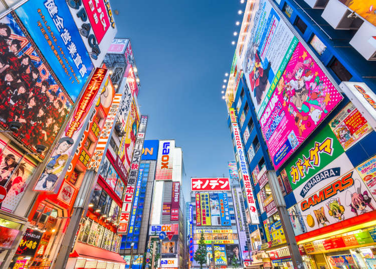

Things to do
| Sensoji | Akihabara | Mori building digital art museum | Tokyo tower |
|---|---|---|---|
| Sensoji is a Buddhist temple located in Asakusa. It is one of Tokyo's most colorful and popular temples. The legend says that in the year 628, two brothers fished a statue of Kannon, the goddess of mercy, out of the Sumida River, and even though they put the statue back into the river, it always returned to them. Consequently, Sensoji was built nearby for the goddess of Kannon. The temple was completed in 645, making it Tokyo's oldest temple. | Akihabara is a buzzing shopping hub famed for its electronics retailers, ranging from tiny stalls to vast department stores like Yodobashi Multimedia Akiba. Venues specializing in manga, anime, and video games include Tokyo Anime Center, for exhibits and souvenirs, and Radio Kaikan with 10 floors of toys, trading cards, and collectibles. Staff dressed as maids or butlers serve tea and desserts at nearby maid cafes | “MORI Building DIGITAL ART MUSEUM”, created by teamLab is, as they describe it themselves, “a world of artworks without boundaries”. First of all, the place is huge. A 10,000㎡ area divided into 5 sections, each having its own specific concept. The art pieces are digitally created and the visitors can interact with these art pieces. It is the world’s very first digital art museum. | Standing 333 meters high in the center of Tokyo, Tokyo Tower is the world's tallest, self-supported steel tower and 3 meters taller than its model, the Eiffel Tower. A symbol of Japan's post-war rebirth as a major economic power, Tokyo Tower was the country's tallest structure from its completion in 1958 until 2012 when it was surpassed by the Tokyo Skytree. In addition to being a popular tourist spot, Tokyo Tower serves as a broadcast antenna. |
 |
 |  |
Here is a list of 4 activities you can do while you are in Tokyo.